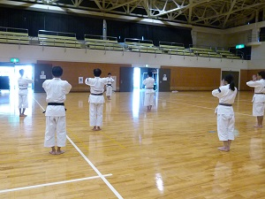
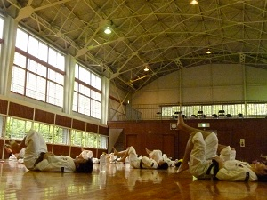
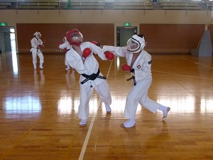
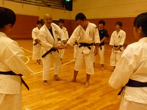
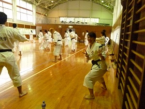
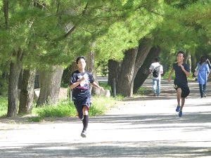
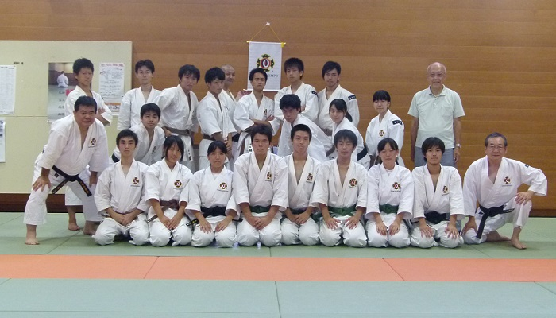

京都大学体育会少林寺拳法部
写真
夏合宿（2016年度）
今年も宮津、天橋立にて、夏合宿です。地獄の七日間の始まりや…
夏合宿恒例(？)となりつつある足上げ腹筋の様子。どうやら今年はインターバルが短かったらしく腹筋ちぎれるかと思いました……
夏合宿では本格的な乱捕練習も行われます。先輩をぶっ倒してやる…と意気込んでいた1回生も結構いたようで、頼もしいかぎりです！怖いけど！（笑）
八木監督にも術科や演武など、様々なことを教えていただきました。八木監督のご指導は、少林寺の本質的なところを突かれていて、非常に興味深いです！皆真剣に聞き入っています。
4日目にはたくさんのOB、OGの方が来て下さいました。OB、OGの方々には演武指導、マラソンのコース案内など多大なるご協力をいただきました。本当にありがとうございました。
天橋立１周１５km マラソンの様子です！皆、迷子になることもなく無事走りきることができました。全体の１位は小畑、１回生の１位は前田でした！
集合写真です。苦難を乗り越えた１回生に絆が生まれているように感じ、管理人はとてもうれしかったです…。皆さん本当にお疲れ様でした！後期も頑張っていきましょう！！！！